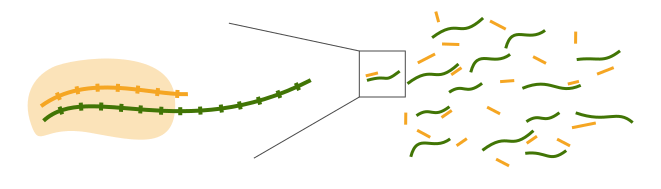

Mathéo Aksil
PhD student in biophysics @ Laboratoire Jean Perrin, Sorbonne Université/CNRS, Paris.
-
Research interests :
- Stochastic processes and statistical field theories
- Gene regulation
- Instabilities and morphogenesis
- Active matter and coarse-graining
